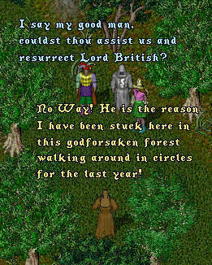
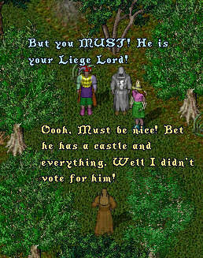
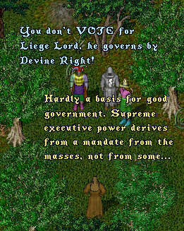
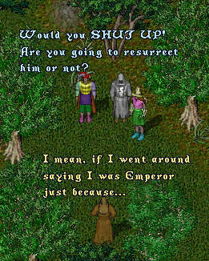
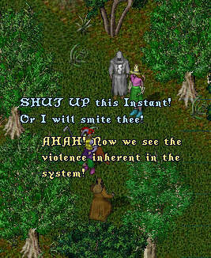
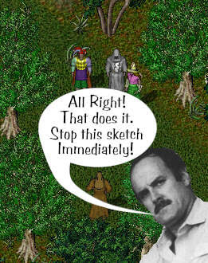

Episode 69: The Conspiracy (Part 2) - Having escaped the hideout, ImaNewbie, Irma and LB's Ghost begin their quest to find the mysterious crystals that hold the GMs and Cousellors under the spell of Lord Blackthorne, forcing them to do his evil bidding. But first they must resurrect Lord British. As the scene opens they encounter a Wandering Healer in the forest and ask for his assistance.





